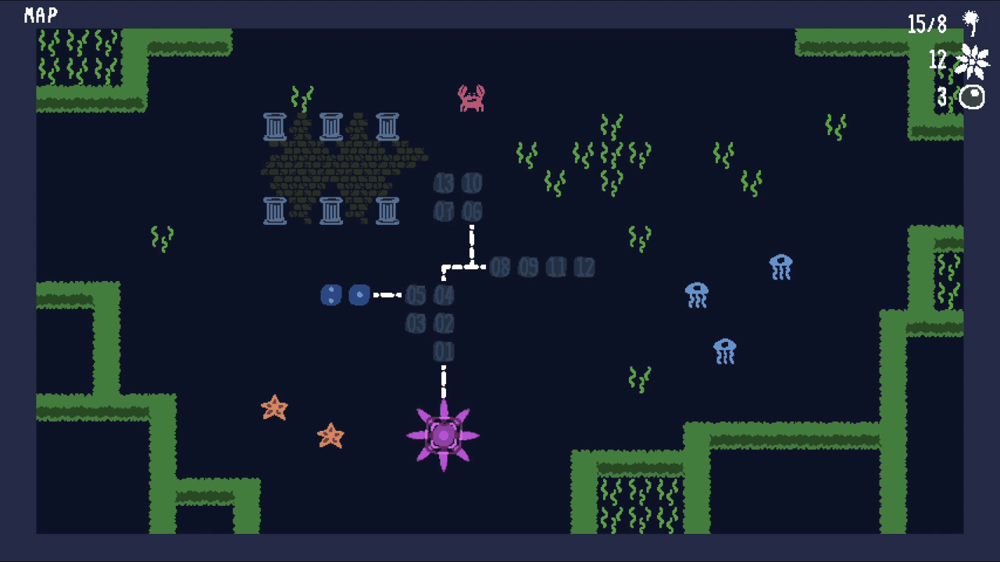
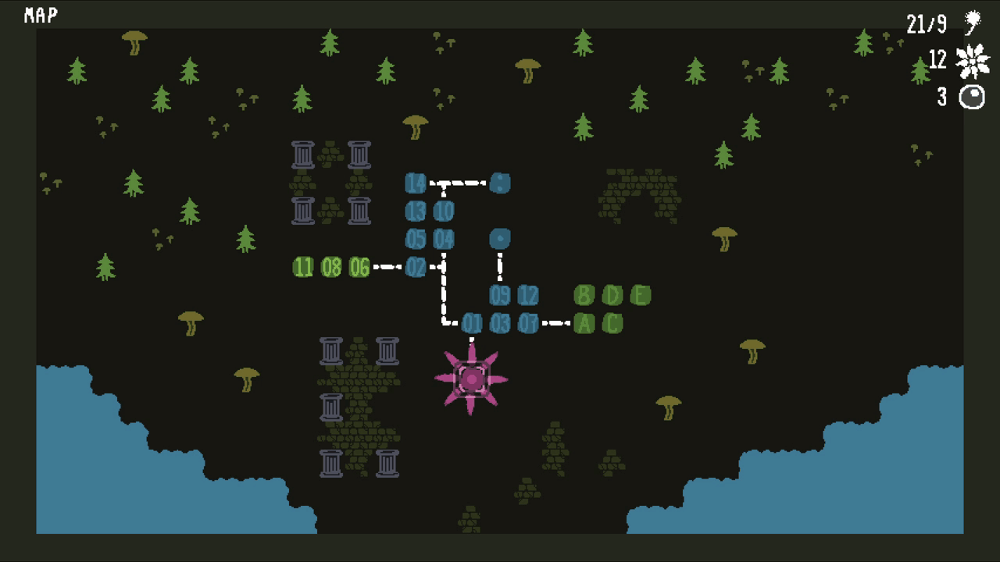
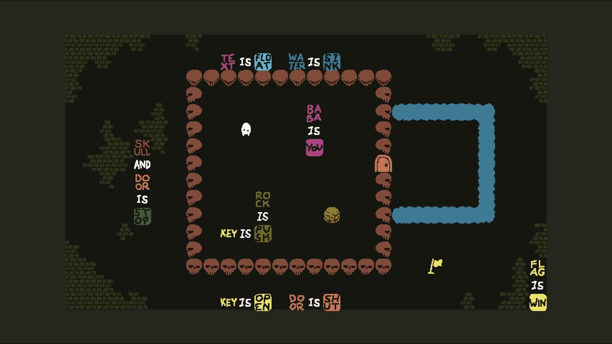

Welcome to the Gameplay page! This page showcases all the different worlds in the Baba Is You world map, along with my favorite levels from each one.
The Lake
The Lake introduces the following properties:
 , , and
, , and
Two Doors
Two Doors is my favourite level in the The Lake because it is the first time in the game where the player is forced to solve a puzzle by applying two contradictive properties. In this case, and . In the level applying both properties to the blocking your way causes it to itself and disappear.
Solitary Island
Solitary Island introduces the following properties and words:
 and
and  .
.
Dungeon consolidates a unique and powerful mechanic to break statements that are stuck aganist walls. It builds upon it's predecessor Prison by showing the player that they can break wall bound statements using only two objects alone, without the use of . This is one of my favourite levels in Baba Is You because I created a popular level called Bug Bite, expanding on this mechanic, sparking a wave of remakes inspired by my design.
Temple Ruins

Temple Ruins introduces the following properties:
- and .
But Where's The Key?

But Where's The Key? makes the player feel like a genius the first time they solve it. It is the first level in Baba Is You where the player needs to form so many statements at the same time to progress the level. A fantastic level that strikes the perfect balance between challenge and simplicity for newer players.
Forest Of Fall
Forest Of Fall introduces the following properties:
- , , and .
Deep Pool
Deep Pool is fairly challenging level on the first playthrough. It involves destroying using the pool of to eventually create the statement  . The level is tough but satisfying when finally realizing what you do. I also just love the aesthetic of this level and music that accompanies it.
. The level is tough but satisfying when finally realizing what you do. I also just love the aesthetic of this level and music that accompanies it.
Deep Forest
Deep Forest introduces the following properties:
- , , , and .
Skull House
Skull House is a level so infamous in the series that an entire mechanic is named after it called "skullhousing". In Baba Is You when the player forms  , each will turn into a single . Although, if the player forms and at the same time, turns into both and . This results in the player doubling the amount of objects they had before. The level requires the player to do this produce a to the and a
, each will turn into a single . Although, if the player forms and at the same time, turns into both and . This results in the player doubling the amount of objects they had before. The level requires the player to do this produce a to the and a  to a tile of . Overall, Skull House is another immensely satisfying level to solve.
to a tile of . Overall, Skull House is another immensely satisfying level to solve.
Rocket Trip

Rocket Trip introduces the following properties:
- and .
Trio

I love levels that require the player to build a sort of contraption made of words and objects. In Trio, the player solves the level by creating something I can only describe as a vehicle, to transport in such a way that they break that statement 
 .
.
Chasm

Chasm introduces the following properties:
- , , , and .
Automated Doors

Automated Doors defys expectations by forcing the player to utilize the most obscure portions of the level. The property makes objects act as , letting the player form statements with them. By writing  and placing a at the top of the level the player can gain control of by forming
and placing a at the top of the level the player can gain control of by forming  while still being able to control the
while still being able to control the  in the eastern room. I like how Automated Doors utilizes the normally dull surroundings of the level to create a unique solution.
in the eastern room. I like how Automated Doors utilizes the normally dull surroundings of the level to create a unique solution.
Flower Garden

Flower Garden introduces the following properties:
- and .
Ruined Orchard

Ruined Orchard is my favourite level from the the Flower Garden because of how well it uses . The operator is generally difficult to incorporate into levels in a way that feels satisfying, non-repetitive, or non-tedious. I do not have much to say about the level other than that I believe it is a work of art and should be used as an example on how to use in level creation.
Volcanic Cavern

Volcanic Cavern introduces the following properties:
- and .
I don't particularly love any of the levels featured in Volcanic Cavern. The levels feel generally unintuitive and overly complicated for what they are. I did not find much satisfaction in solving them compared to levels from other worlds.
Mountaintop
Mountaintop introduces only one new property:
- .
Solitude
Solitude still hurts my brain a little even as an experienced Baba Is You player. I love levels that have few rules but still provide a solution that isn't immediately obvious. Solitude succeeds in this aspect by requiring the player to navigate a to a without trapping . The player can only do this using , a prefix that make a statement apply only to objects that do not intersect with anything. Overall, a quality example of a simply designed but challenging late-game level.